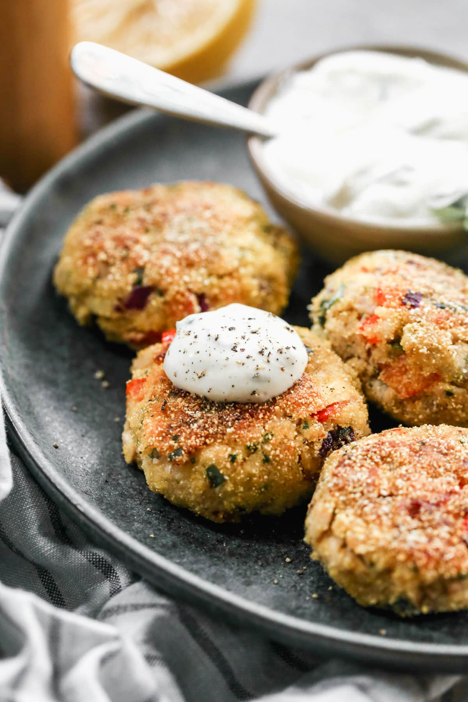

Salmon Croquettes

A picture of the finished product! A classic in my household, this easy dish can be made in less than 20 minutes.
My beloved girlfriend turned me onto this dish. Essentially, it is some canned salmon, breadcrumbs, egg as a binder, a little bit of pan frying and voila! You have a little taste of heaven. A great snack to have in a hurry, I highly recommend making a dill pickle dipping sauce as well.
Ingredients
- 1 ½ cups plain yogurt or fat-free sour cream
- ¼ cup Dijon mustard
- 6 sprigs fresh dill, chopped
- 2 (14.75-ounce) cans salmon packed in water (look for a sustainable brand)
- 4 celery stalks, finely chopped
- 1 large white onion, finely chopped
- 4 large eggs, beaten
- ½ tablespoon salt
- 1 tablespoon pepper
- 2 tablespoons olive oil
Steps
- To make the dill sauce, whisk together the yogurt, mustard, and dill in a small bowl. Set aside.
- Drain the salmon, and then remove and discard the bones and skin. Mix the salmon, celery, onion, eggs, salt, and pepper in a good-size bowl. Form the mixture into 8 patties. Slick a medium skillet with the olive oil and heat it over medium-high heat. Cook the patties until browned on both sides, about 5 minutes per side.
- Put a dollop of the dill sauce on top of each patty and serve.